JEE Main 2023 (Session 2), 12 Apr Shift 1: worked solutions for review
Questions and options are NTA’s own images; the green option is NTA’s final key. Every solution below was written by Claude
and checked against NTA’s final key. It is not NTA’s solution. Please mark anything unclear or wrong.
Q1 · Mathematics · ID 7155054312
Left out of the bank: dropped (NTA).
Q2 · Mathematics · MCQ · ID 7155054313
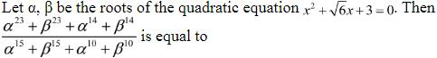
(1) 
Hint 1: Write the roots in polar form. What are |α| and the argument?
Hint 2: α, β = √3 e±3πi/4, so αn + βn = 2 × 3n/2 cos(3nπ/4).
What this tests: Powers of complex roots
1. n = 14 and n = 10 give cos = 0, so those terms vanish.
2. n = 23 and n = 15 both give cos = −1/√2.
3. Ratio = 323/2/315/2 = 34 = 81.
Answer: (3)
If this felt hard: Revise Complex Numbers (polar form).
Claude’s answer: 3 · NTA final key: 3 · agrees · Answer recomputed with SymPy (tools/verify_pyq_solutions.py)
Q3 · Mathematics · MCQ · ID 7155054314
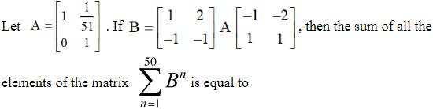
(1) 
(2) 
Hint 1: Multiply the two outer matrices. What do you get?
Hint 2: [[1, 2], [−1, −1]] and [[−1, −2], [1, 1]] are inverses, so Bn = PAnP−1.
What this tests: Similar matrices
1. An = [[1, n/51], [0, 1]]; ΣAn = [[50, 25], [0, 50]].
2. P(ΣAn)P−1 = [[75, 25], [−25, 25]].
3. Sum of entries = 100.
Answer: (3)
If this felt hard: Revise Matrices.
Claude’s answer: 3 · NTA final key: 3 · agrees · Answer recomputed with SymPy (tools/verify_pyq_solutions.py)
Q4 · Mathematics · MCQ · ID 7155054315
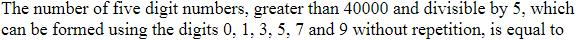
(1) 
Hint 1: First digit 5, 7 or 9; last digit 0 or 5.
Hint 2: Treat last digit 0 and last digit 5 separately.
What this tests: Counting numbers
1. Last 0: 3 × 4 × 3 × 2 = 72.
2. Last 5: first 7 or 9, then 4 × 3 × 2: 48.
3. Total 120.
Answer: (3)
If this felt hard: Revise Permutations and Combinations.
Claude’s answer: 3 · NTA final key: 3 · agrees · Answer recomputed by script (tools/verify_pyq_solutions.py)
Q5 · Mathematics · MCQ · ID 7155054316
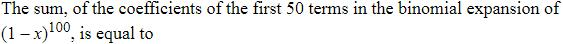
Hint 1: Use C(n, r) = C(n − 1, r) + C(n − 1, r − 1); the alternating sum telescopes.
Hint 2: Σr=0k(−1)rC(n, r) = (−1)kC(n − 1, k).
What this tests: Alternating binomial sums
1. First 50 terms: r = 0 to 49.
2. Sum = (−1)49C(99, 49) = −C(99, 49).
Answer: (2)
If this felt hard: Revise Binomial Theorem.
Claude’s answer: 2 · NTA final key: 2 · agrees · Answer recomputed with SymPy (tools/verify_pyq_solutions.py)
Q6 · Mathematics · MCQ · ID 7155054317
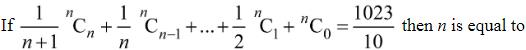
(1) 
(2) 
(3) 
(4) 
Hint 1: Integrate (1 + x)n from 0 to 1.
Hint 2: Σ C(n, r)/(r + 1) = (2n+1 − 1)/(n + 1).
What this tests: Binomial sums by integration
1. (2n+1 − 1)/(n + 1) = 1023/10.
2. n = 9.
Answer: (4)
If this felt hard: Revise Binomial Theorem.
Claude’s answer: 4 · NTA final key: 4 · agrees · Answer recomputed with SymPy (tools/verify_pyq_solutions.py)
Q7 · Mathematics · MCQ · ID 7155054318
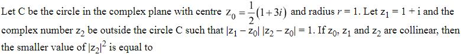
(1)
Hint 1: Find |z1 − z0| first.
Hint 2: z1 − z0 = (1 − i)/2, so |z2 − z0| = √2, on the same line.
What this tests: Complex numbers and lines
1. z2 = z0 ± (1 − i) = (3 + i)/2 or (−1 + 5i)/2.
2. |z2|2 = 5/2 or 13/2; both outside C.
3. Smaller: 5/2.
Answer: (2)
If this felt hard: Revise Complex Numbers.
Claude’s answer: 2 · NTA final key: 2 · agrees · Answer recomputed with SymPy (tools/verify_pyq_solutions.py)
Q8 · Mathematics · MCQ · ID 7155054319
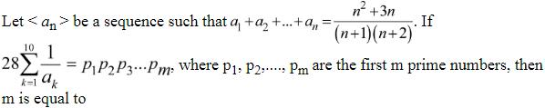
(1) 
(2)
(3) 
(4) 
Hint 1: Write Sn = 1 − 2/((n + 1)(n + 2)) and subtract.
Hint 2: an = 4/(n(n + 1)(n + 2)).
What this tests: Sequences from partial sums
1. Σ110 k(k + 1)(k + 2)/4 = (10 × 11 × 12 × 13)/16 = 1072.5.
2. 28 × 1072.5 = 30030 = 2 × 3 × 5 × 7 × 11 × 13.
3. m = 6.
Answer: (2)
If this felt hard: Revise Sequences and Series.
Claude’s answer: 2 · NTA final key: 2 · agrees · Answer recomputed with SymPy (tools/verify_pyq_solutions.py)
Q9 · Mathematics · MCQ · ID 7155054320
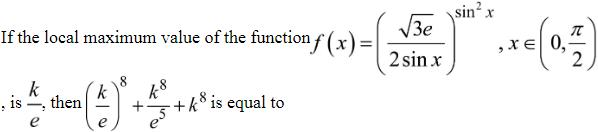
Hint 1: Take logs: ln f = t2(ln(√(3e)/2) − ln t) with t = sin x.
Hint 2: Differentiate in t: maximum where ln t = ln(√3/2).
What this tests: Maxima with logarithms
1. t = √3/2: ln f = (3/4)(1/2) = 3/8.
2. k/e = e3/8, so k8 = e11.
3. (k/e)8 + k8/e5 + k8 = e3 + e6 + e11.
Answer: (4)
If this felt hard: Revise Application of Derivatives.
Claude’s answer: 4 · NTA final key: 4 · agrees · Answer recomputed with SymPy (tools/verify_pyq_solutions.py)
Note: Reads the base as √(3e)/(2 sin x); with √3 e the function has no local maximum in (0, π/2).
Q10 · Mathematics · MCQ · ID 7155054321
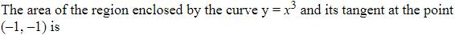
Hint 1: Find the tangent at (−1, −1) and where it meets the curve again.
Hint 2: y = 3x + 2; x3 − 3x − 2 = (x + 1)2(x − 2).
What this tests: Area with a tangent
1. Area = ∫−12(3x + 2 − x3) dx = 27/4.
Answer: (3)
If this felt hard: Revise Application of Integrals.
Claude’s answer: 3 · NTA final key: 3 · agrees · Answer recomputed with SymPy (tools/verify_pyq_solutions.py)
Q11 · Mathematics · MCQ · ID 7155054322
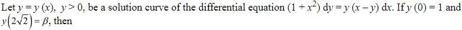
Hint 1: This is a Bernoulli equation. Put u = 1/y.
Hint 2: du/dx + xu/(1 + x2) = 1/(1 + x2), IF √(1 + x2).
What this tests: Bernoulli equations
1. u√(1 + x2) = ln(x + √(1 + x2)) + 1 (from y(0) = 1).
2. At x = 2√2: 3/β = ln(3 + 2√2) + 1.
3. e3/β = e(3 + 2√2).
Answer: (4)
If this felt hard: Revise Differential Equations.
Claude’s answer: 4 · NTA final key: 4 · agrees · Answer recomputed with SymPy (tools/verify_pyq_solutions.py)
Q12 · Mathematics · MCQ · ID 7155054323
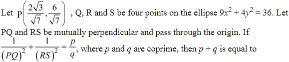
Hint 1: PQ and RS are perpendicular diameters. Use polar form r2(cos2θ/a2 + sin2θ/b2) = 1.
Hint 2: 1/OP2 + 1/OR2 = 1/a2 + 1/b2 for perpendicular radii.
What this tests: Perpendicular diameters of an ellipse
1. 1/OP2 + 1/OR2 = 1/4 + 1/9 = 13/36.
2. PQ = 2OP, RS = 2OR: sum = 13/144.
3. p + q = 157.
Answer: (4)
If this felt hard: Revise Conic Sections.
Claude’s answer: 4 · NTA final key: 4 · agrees · Answer recomputed with SymPy (tools/verify_pyq_solutions.py)
Q13 · Mathematics · MCQ · ID 7155054324
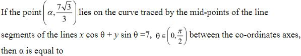
(3) 
Hint 1: Find the intercepts and the mid-point (h, k).
Hint 2: h = 7/(2cos θ), k = 7/(2sin θ): 1/h2 + 1/k2 = 4/49.
What this tests: Locus of mid-points
1. k = 7/√3: 1/h2 = 4/49 − 3/49.
2. h = 7 (positive for θ in (0, π/2)).
Answer: (3)
If this felt hard: Revise Straight Lines.
Claude’s answer: 3 · NTA final key: 3 · agrees · Answer recomputed with SymPy (tools/verify_pyq_solutions.py)
Q14 · Mathematics · MCQ · ID 7155054325
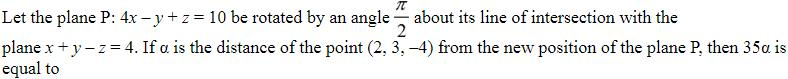
(4)
Hint 1: The new plane contains the line and is perpendicular to P.
Hint 2: P1 + λP2 = 0 with normal ⊥ (4, −1, 1).
What this tests: Rotating a plane
1. 18 + 2λ = 0, λ = −9: 5x + 10y − 10z − 26 = 0.
2. Distance of (2, 3, −4) = 54/15.
3. 35α = 126.
Answer: (4)
If this felt hard: Revise Three Dimensional Geometry.
Claude’s answer: 4 · NTA final key: 4 · agrees · Answer recomputed with SymPy (tools/verify_pyq_solutions.py)
Q15 · Mathematics · MCQ · ID 7155054326
(1)
(2) 
(3)
(4) 
Hint 1: Coplanar: some plane through l2 contains l1.
Hint 2: Plane (3x + 2y + z − 2) + μ(x − 3y + 2z − 13) = 0 parallel to (3, 1, −2).
What this tests: Coplanar lines
1. μ = 9/4: 21x − 19y + 22z = 125; (−5, −4, α) lies on it, so α = 7.
2. Foot of Q on l1: t = 1, P = (−2, −3, 5).
3. |a| + |b| + |c| = 10.
Answer: (2)
If this felt hard: Revise Three Dimensional Geometry.
Claude’s answer: 2 · NTA final key: 2 · agrees · Answer recomputed with SymPy (tools/verify_pyq_solutions.py)
Q16 · Mathematics · MCQ · ID 7155054327
(1)
(2) 
(3)
(4) 
Hint 1: Coplanar: the determinant is 0.
Hint 2: abc − a − b − c + 2 = 0.
What this tests: Coplanar vectors
1. Put a = 1 − p etc.: this becomes the condition 1/p + 1/q + 1/r = 1.
Answer: (2)
If this felt hard: Revise Vector Algebra.
Claude’s answer: 2 · NTA final key: 2 · agrees · Answer recomputed with SymPy (tools/verify_pyq_solutions.py)
Q17 · Mathematics · MCQ · ID 7155054328
(1)
(2) 
(3)
(4)
Hint 1: (a + b + c) × c = 0 means c ∥ a + b.
Hint 2: c = t(λ + 3, 0, 1).
What this tests: Vector equations
1. a·c = t(λ2 + 3λ − 1) = −17 and b·c = t(3λ + 11) = −20 give λ = 3, t = −1.
2. c = (−6, 0, −1); c × (3, 1, 1) = (1, 3, −6).
3. |.|2 = 46.
Answer: (1)
If this felt hard: Revise Vector Algebra.
Claude’s answer: 1 · NTA final key: 1 · agrees · Answer recomputed with SymPy (tools/verify_pyq_solutions.py)
Q18 · Mathematics · MCQ · ID 7155054329
(1)
(2) 
(3) 
(4) 
Hint 1: Variance of a difference of independent variables.
Hint 2: Var(α − β) = Var α + Var β = 35/12 + 35/12.
What this tests: Variance
1. 35/6, so p = 35.
2. Divisors 1 + 5 + 7 + 35 = 48.
Answer: (3)
If this felt hard: Revise Probability.
Claude’s answer: 3 · NTA final key: 3 · agrees · Answer recomputed by script (tools/verify_pyq_solutions.py)
Q19 · Mathematics · MCQ · ID 7155054330
(1)
(2)
(3)
(4)
Hint 1: Turn the condition into one about the sides.
Hint 2: It reduces to sin A + sin C = 2 sin B, so a + c = 2b.
What this tests: Triangle identities
1. b = 5.
2. cos A = 65/70 = 13/14, cos C = −15/30 = −1/2.
3. cos A − cos C = 10/7.
Answer: (2)
If this felt hard: Revise Trigonometric Functions.
Claude’s answer: 2 · NTA final key: 2 · agrees · Answer recomputed with SymPy (tools/verify_pyq_solutions.py)
Q20 · Mathematics · MCQ · ID 7155054331
(1)
(2)
(3)
(4)
Hint 1: S1: p ∧ ∼q is exactly when p ⇒ q is false.
Hint 2: S2 lists all four cases of p, q.
What this tests: Tautologies
1. S1 is a contradiction.
2. S2 is a tautology.
Answer: (1)
If this felt hard: Revise Mathematical Reasoning.
Claude’s answer: 1 · NTA final key: 1 · agrees · Answer recomputed by script (tools/verify_pyq_solutions.py)
Note: Mathematical reasoning is no longer in the JEE Main syllabus.
Q21 · Mathematics · Numerical · ID 7155054332
Hint 1: Start with the forced pairs: the diagonal, (1, 2), (2, 3) and (1, 3) for transitivity.
Hint 2: Try adding (2, 1), (3, 2), (3, 1) one at a time and check transitivity.
What this tests: Properties of relations
1. The base set works.
2. Adding (2, 1) or (3, 2) alone works.
3. Any other addition breaks transitivity or makes R symmetric.
4. 3 relations.
Answer: 3
If this felt hard: Revise Relations and Functions.
Claude’s answer: 3 · NTA final key: 3 · agrees · Answer recomputed by script (tools/verify_pyq_solutions.py)
Q22 · Mathematics · Numerical · ID 7155054333
Hint 1: Expand Dk: it is linear in k.
Hint 2: Dk = n3 + 5n2 + 6n + 4 − 2kn(n + 4).
What this tests: Determinants and sums
1. Σk=1n Dk = n(n3 + 5n2 + 6n + 4) − n2(n + 1)(n + 4) = n2 + 4n... simplifies to 2n2 + 4n.
2. 2n2 + 4n = 96 gives n = 6.
Answer: 6
If this felt hard: Revise Determinants.
Claude’s answer: 6 · NTA final key: 6 · agrees · Answer recomputed with SymPy (tools/verify_pyq_solutions.py)
Q23 · Mathematics · Numerical · ID 7155054334
Hint 1: Count the complement: arrangements with no three consecutive digits in AP.
Hint 2: Take digits a < b < c in AP; 'in AP' here means a, b, c in some order with a common difference (b in the middle).
What this tests: Counting with patterns
1. Total arrangements 9!/(3!)3 = 1680.
2. A direct count of arrangements containing abc or cba consecutively gives 944.
Answer: 944
If this felt hard: Revise Permutations and Combinations.
Claude’s answer: 944 · NTA final key: 944 · agrees · Answer recomputed by script (tools/verify_pyq_solutions.py)
Note: Checked by brute force. NTA counts only non-constant APs (abc or cba); counting aaa as an AP too gives 1208.
Q24 · Mathematics · Numerical · ID 7155054335
Hint 1: In a GP, Σ1/ai = Σai/a32 for 5 terms.
Hint 2: a32 = (31/2)/(31/8) = 4.
What this tests: GP and variance
1. a3 = 2; 2(1 + r + r2) = 14 gives r = 2: terms 1/2, 1, 2, 4, 8.
2. Variance = 85.25/5 − 3.12 = 7.44 = 186/25.
3. m + n = 211.
Answer: 211
If this felt hard: Revise Sequences and Series and Statistics.
Claude’s answer: 211 · NTA final key: 211 · agrees · Answer recomputed with SymPy (tools/verify_pyq_solutions.py)
Q25 · Mathematics · Numerical · ID 7155054336
Hint 1: Check left and right limits at x = −1 and x = 0.
Hint 2: Near −1 from the left: [x] = −2.
What this tests: Continuity with greatest integer
1. At −1: left limit 2 + 1 = 3, value 1.
2. At 0: left limit 1 + 1 = 2, value 0.
3. 2 points.
Answer: 2
If this felt hard: Revise Continuity and Differentiability.
Claude’s answer: 2 · NTA final key: 2 · agrees · Theory question: not computable, needs a teacher’s review
Q26 · Mathematics · Numerical · ID 7155054337
Hint 1: 100x2 − 1 changes sign at x = ±0.1. Use symmetry.
Hint 2: 2[∫00.1(1 − 100x2) dx + ∫0.10.15(100x2 − 1) dx].
What this tests: Integrals with modulus
1. = 2(1/15 + 7/240) = 23/120.
2. k = 3000 × 23/120 = 575.
Answer: 575
If this felt hard: Revise Definite Integrals.
Claude’s answer: 575 · NTA final key: 575 · agrees · Answer recomputed with SymPy (tools/verify_pyq_solutions.py)
Q27 · Mathematics · Numerical · ID 7155054338
Hint 1: Try differentiating √(x(x + 7)) + 7 ln(√x + √(x + 7)).
Hint 2: Its derivative is √((x + 7)/x).
What this tests: Indefinite integrals
1. I(9) = 12 + 7 ln 7 + C, so C = 0.
2. I(1) = 2√2 + 7 ln(1 + 2√2): α = 2√2.
3. α4 = 64.
Answer: 64
If this felt hard: Revise Integrals.
Claude’s answer: 64 · NTA final key: 64 · agrees · Answer recomputed with SymPy (tools/verify_pyq_solutions.py)
Q28 · Mathematics · Numerical · ID 7155054339
Hint 1: Centre (r, r). Chord of length 2 means r2 − d2 = 1.
Hint 2: d = |2r − 2|/√2.
What this tests: Chords of circles
1. r2 − 4r + 3 = 0: r = 1, 3.
2. 1 + 9 − 3 = 7.
Answer: 7
If this felt hard: Revise Circles.
Claude’s answer: 7 · NTA final key: 7 · agrees · Answer recomputed with SymPy (tools/verify_pyq_solutions.py)
Q29 · Mathematics · Numerical · ID 7155054340
Hint 1: For a plane meeting the axes at A, B, C, the orthocentre of ABC is the foot of the perpendicular from O.
Hint 2: Foot = tn with n·(tn) + 6 = 0.
What this tests: Orthocentre in 3D
1. t = −3/7: (−3/7, −9/7, 6/7).
2. 98(−12/7)2 = 288.
Answer: 288
If this felt hard: Revise Three Dimensional Geometry.
Claude’s answer: 288 · NTA final key: 288 · agrees · Answer recomputed with SymPy (tools/verify_pyq_solutions.py)
Q30 · Mathematics · Numerical · ID 7155054341
Hint 1: This is a geometric distribution with success probability (n − 1)/n.
Hint 2: Mean = n/(n − 1).
What this tests: Geometric distribution
1. n/(n − 1) = n/9 gives n = 10.
Answer: 10
If this felt hard: Revise Probability.
Claude’s answer: 10 · NTA final key: 10 · agrees · Answer recomputed by script (tools/verify_pyq_solutions.py)
Q31 · Physics · MCQ · ID 7155054342
(1)
(2)
(3)
(4)
Hint 1: Which quantities depend on the satellite's mass?
Hint 2: Orbital speed √(GM/r) does not.
What this tests: Satellites
1. Speed is the same; KE, PE and total energy double for A.
Answer: (1)
If this felt hard: Revise Gravitation.
Claude’s answer: 1 · NTA final key: 1 · agrees · Theory question: not computable, needs a teacher’s review
Q32 · Physics · MCQ · ID 7155054343
(1) 
(2) 
(3) 
(4) 
Hint 1: Topic: Dimensions. Which rule or fact from it settles this question?
Hint 2: Write each in M, L, T.
What this tests: Dimensions
1. Spring constant MT−2 (II), angular speed T−1 (I), angular momentum ML2T−1 (IV), MoI ML2 (III).
Answer: (2)
If this felt hard: Revise Units and Measurements.
Claude’s answer: 2 · NTA final key: 2 · agrees · Answer recomputed by script (tools/verify_pyq_solutions.py)
Q33 · Physics · MCQ · ID 7155054344
(1)
(2)
(3)
(4)
Hint 1: Topic: Work–energy and acceleration. Which rule or fact from it settles this question?
Hint 2: Work done by the brakes = KE. Is velocity changing in a turn?
What this tests: Work–energy and acceleration
1. I true: F × d = KE.
2. II false: the direction changes, so there is acceleration.
Answer: (3)
If this felt hard: Revise Work, Energy and Power.
Claude’s answer: 3 · NTA final key: 3 · agrees · Theory question: not computable, needs a teacher’s review
Q34 · Physics · MCQ · ID 7155054345
(1)
(2) 
(3) 
(4) 
Hint 1: fc = 500 Hz, fm = 2 Hz.
Hint 2: AM contains fc and fc ± fm.
What this tests: Amplitude modulation
1. 500, 498, 502 Hz: A, D, E.
Answer: (1)
If this felt hard: Revise Communication Systems.
Claude’s answer: 1 · NTA final key: 1 · agrees · Answer recomputed by script (tools/verify_pyq_solutions.py)
Note: Communication systems is no longer in the JEE Main syllabus.
Q35 · Physics · MCQ · ID 7155054346
(1) 
(2) 
(3)
(4)
Hint 1: Topic: LCR resonance. Which rule or fact from it settles this question?
Hint 2: What happens to the current through resonance?
What this tests: LCR resonance
1. Current peaks at resonance: I true.
2. Power factor 1 at resonance: II true.
Answer: (1)
If this felt hard: Revise Alternating Current.
Claude’s answer: 1 · NTA final key: 1 · agrees · Theory question: not computable, needs a teacher’s review
Q36 · Physics · MCQ · ID 7155054347
(1)
(2)
(3)
(4) 
Hint 1: Topic: Escape velocity. Which rule or fact from it settles this question?
Hint 2: ve = √(2GM/R).
What this tests: Escape velocity
1. √(16/4) = 2: ratio 2 : 1.
Answer: (1)
If this felt hard: Revise Gravitation.
Claude’s answer: 1 · NTA final key: 1 · agrees · Answer recomputed by script (tools/verify_pyq_solutions.py)
Q37 · Physics · MCQ · ID 7155054348
(1)
(2)
(3)
(4)
Hint 1: Newton's law of cooling with average temperatures.
Hint 2: (T1 − T2)/t = k(Tavg − Ts).
What this tests: Newton's law of cooling
1. 20/5 = k(70 − 20): k = 2/25 per min.
2. 20/t = (2/25)(30): t = 25/3 min = 500 s.
Answer: (2)
If this felt hard: Revise Thermal Properties of Matter.
Claude’s answer: 2 · NTA final key: 2 · agrees · Answer recomputed by script (tools/verify_pyq_solutions.py)
Q38 · Physics · MCQ · ID 7155054349
(1) 
(2) 
(3) 
(4) 
Hint 1: Topic: Carnot efficiency. Which rule or fact from it settles this question?
Hint 2: Carnot efficiency between 373 K and 273 K.
What this tests: Carnot efficiency
1. ηCarnot = 100/373 ≈ 27%.
2. A real engine is less efficient: B and D.
Answer: (2)
If this felt hard: Revise Thermodynamics.
Claude’s answer: 2 · NTA final key: 2 · agrees · Answer recomputed by script (tools/verify_pyq_solutions.py)
Note: Treats 'an engine' as a real (irreversible) engine.
Q39 · Physics · MCQ · ID 7155054350
(1)
(2)
(3)
(4)
Hint 1: Topic: RMS speed. Which rule or fact from it settles this question?
Hint 2: vrms ∝ 1/√M at the same T.
What this tests: RMS speed
1. 490 × √(70.9/39.9) ≈ 653 m/s; nearest option 651.7 m/s.
Answer: (3)
If this felt hard: Revise Kinetic Theory.
Claude’s answer: 3 · NTA final key: 3 · agrees · Answer recomputed by script (tools/verify_pyq_solutions.py)
Note: Exact value ≈ 653 m/s; option (3) is the closest.
Q40 · Physics · MCQ · ID 7155054351
(1)
(2)
(3) 
(4)
Hint 1: Topic: Energy in SHM. Which rule or fact from it settles this question?
Hint 2: PE = kx2/2, KE = k(A2 − x2)/2.
What this tests: Energy in SHM
1. At x = A/2: 1/4 : 3/4 = 1 : 3.
Answer: (2)
If this felt hard: Revise Oscillations.
Claude’s answer: 2 · NTA final key: 2 · agrees · Answer recomputed by script (tools/verify_pyq_solutions.py)
Q41 · Physics · MCQ · ID 7155054352
(1)
(2) 
(3) 
(4)
Hint 1: Topic: Gauss's law. Which rule or fact from it settles this question?
Hint 2: Gauss's law: flux = enclosed charge/ε0.
What this tests: Gauss's law
1. Net charge of a dipole is 0: both true, R explains A.
Answer: (1)
If this felt hard: Revise Electric Charges and Fields.
Claude’s answer: 1 · NTA final key: 1 · agrees · Theory question: not computable, needs a teacher’s review
Q42 · Physics · MCQ · ID 7155054353
(1)
(2)
(3)
(4)
Hint 1: Volume is fixed: area changes 4 times when length is quartered.
Hint 2: R ∝ L2 at fixed volume.
What this tests: Resistance on reshaping
1. R = 160/16 = 10 Ω.
Answer: (1)
If this felt hard: Revise Current Electricity.
Claude’s answer: 1 · NTA final key: 1 · agrees · Answer recomputed by script (tools/verify_pyq_solutions.py)
Q43 · Physics · MCQ · ID 7155054354
(1)
(2)
(3) 
(4) 
Hint 1: Topic: Diamagnetism. Which rule or fact from it settles this question?
Hint 2: Does diamagnetism depend on temperature?
What this tests: Diamagnetism
1. I false.
2. II true.
Answer: (4)
If this felt hard: Revise Magnetism and Matter.
Claude’s answer: 4 · NTA final key: 4 · agrees · Theory question: not computable, needs a teacher’s review
Q44 · Physics · MCQ · ID 7155054355
(1) 
(2) 
(3)
(4)
Hint 1: Topic: Vertical motion. Which rule or fact from it settles this question?
Hint 2: v = u − gt.
What this tests: Vertical motion
1. v(3) = 120, v(5) = 100: ratio 6/5.
2. x = 5.
Answer: (1)
If this felt hard: Revise Motion in a Straight Line.
Claude’s answer: 1 · NTA final key: 1 · agrees · Answer recomputed by script (tools/verify_pyq_solutions.py)
Q45 · Physics · MCQ · ID 7155054356
(1)
(2)
(3)
(4)
Hint 1: At rest, F1 balances the resultant of F2 and F3.
Hint 2: √(64 + 36) = 10 N.
What this tests: Equilibrium of forces
1. Removing F1 leaves 10 N: a = 2 m/s2.
Answer: (1)
If this felt hard: Revise Laws of Motion.
Claude’s answer: 1 · NTA final key: 1 · agrees · Answer recomputed by script (tools/verify_pyq_solutions.py)
Q46 · Physics · MCQ · ID 7155054357
(1)
(2)
(3)
(4)
Hint 1: Apparent depth = real depth/μ from each side.
Hint 2: x/μ = 12, (24 − x)/μ = 4.
What this tests: Apparent depth
1. 24/μ = 16: μ = 3/2.
Answer: (4)
If this felt hard: Revise Ray Optics.
Claude’s answer: 4 · NTA final key: 4 · agrees · Answer recomputed by script (tools/verify_pyq_solutions.py)
Q47 · Physics · MCQ · ID 7155054358
(1) 
(2) 
(3)
(4)
Hint 1: Topic: de Broglie wavelength. Which rule or fact from it settles this question?
Hint 2: λ = h/√(2mqV).
What this tests: de Broglie wavelength
1. Proton: m × e × 2. Alpha: 4m × 2e × 4 = 32me.
2. λp/λα = √(32/2) = 4.
Answer: (2)
If this felt hard: Revise Dual Nature of Radiation and Matter.
Claude’s answer: 2 · NTA final key: 2 · agrees · Answer recomputed by script (tools/verify_pyq_solutions.py)
Q48 · Physics · MCQ · ID 7155054359
(1) 
(2)
(3) 
(4) 
Hint 1: Which level can 12.5 eV reach from n = 1?
Hint 2: E3 − E1 = 12.09 eV; E4 − E1 = 12.75 eV.
What this tests: Spectral lines
1. Up to n = 3.
2. Lines: 3 → 1, 3 → 2, 2 → 1: 3.
Answer: (3)
If this felt hard: Revise Atoms.
Claude’s answer: 3 · NTA final key: 3 · agrees · Answer recomputed by script (tools/verify_pyq_solutions.py)
Q49 · Physics · MCQ · ID 7155054360
(1)
(2) 
(3)
(4)
Hint 1: Topic: Transistor gain. Which rule or fact from it settles this question?
Hint 2: β = ΔIC/ΔIB.
What this tests: Transistor gain
1. 11 mA/0.1 mA = 110.
Answer: (3)
If this felt hard: Revise Semiconductor Electronics.
Claude’s answer: 3 · NTA final key: 3 · agrees · Answer recomputed by script (tools/verify_pyq_solutions.py)
Q50 · Physics · MCQ · ID 7155054361
(1)
(2) 
(3) 
(4) 
Hint 1: Topic: EM spectrum. Which rule or fact from it settles this question?
Hint 2: Compare wavelengths of IR/visible and microwaves.
What this tests: EM spectrum
1. A false: optical waves have shorter wavelengths.
2. R true: IR photons are more energetic.
Answer: (4)
If this felt hard: Revise Electromagnetic Waves.
Claude’s answer: 4 · NTA final key: 4 · agrees · Theory question: not computable, needs a teacher’s review
Q51 · Physics · Numerical · ID 7155054362
Hint 1: Topic: Oscillating compass needle. Which rule or fact from it settles this question?
Hint 2: f2 ∝ BH = B cos δ.
What this tests: Oscillating compass needle
1. (20/30)2 = (B1/B2)(cos 30°/cos 60°) = √3 B1/B2.
2. B1/B2 = 4/(9√3) = 4/√243.
Answer: 243
If this felt hard: Revise Magnetism and Matter.
Claude’s answer: 243 · NTA final key: 243 · agrees · Answer recomputed by script (tools/verify_pyq_solutions.py)
Q52 · Physics · Numerical · ID 7155054363
Hint 1: At constant speed, engine work = work against friction.
Hint 2: W = μmgd.
What this tests: Work against friction
1. W = 0.04 × 500 × 9.8 × 4000 = 784000 J = 784 kJ.
Answer: 784
If this felt hard: Revise Work, Energy and Power.
Claude’s answer: 784 · NTA final key: 784 · agrees · Answer recomputed by script (tools/verify_pyq_solutions.py)
Note: NTA uses g = 9.8 m/s^{2} (g = 10 gives 800).
Q53 · Physics · Numerical · ID 7155054364
Hint 1: Topic: Rolling. Which rule or fact from it settles this question?
Hint 2: Spherical shell: I = (2/3)MR2.
What this tests: Rolling
1. Rotational KE/total = (1/3)/(5/6) = 2/5.
2. x = 2.
Answer: 2
If this felt hard: Revise System of Particles and Rotational Motion.
Claude’s answer: 2 · NTA final key: 2 · agrees · Answer recomputed by script (tools/verify_pyq_solutions.py)
Q54 · Physics · Numerical · ID 7155054365
Hint 1: Continuity and Bernoulli.
Hint 2: v2 = 2v1; ΔP = (1/2)ρ(v22 − v12).
What this tests: Bernoulli's equation
1. 3 = (1/2)(1250)(3v12): v1 = 0.04 m/s.
2. Q = 10−3 × 0.04 = 4 × 10−5 m3/s.
Answer: 4
If this felt hard: Revise Mechanical Properties of Fluids.
Claude’s answer: 4 · NTA final key: 4 · agrees · Answer recomputed by script (tools/verify_pyq_solutions.py)
Q55 · Physics · Numerical · ID 7155054366
Hint 1: Ratio 1 : 3 : 5 means a closed pipe.
Hint 2: fn = nv/(4L), n odd.
What this tests: Closed organ pipe
1. 5 × 324/(4L) = 405: L = 1 m.
Answer: 1
If this felt hard: Revise Waves.
Claude’s answer: 1 · NTA final key: 1 · agrees · Answer recomputed by script (tools/verify_pyq_solutions.py)
Q56 · Physics · Numerical · ID 7155054367
Hint 1: Topic: Combining drops. Which rule or fact from it settles this question?
Hint 2: V = kq/r: charge ×64, radius ×4.
What this tests: Combining drops
1. V = 64/4 × 10 = 160 mV.
Answer: 160
If this felt hard: Revise Electrostatic Potential.
Claude’s answer: 160 · NTA final key: 160 · agrees · Answer recomputed by script (tools/verify_pyq_solutions.py)
Q57 · Physics · Numerical · ID 7155054368
Hint 1: Topic: Temperature dependence of resistance. Which rule or fact from it settles this question?
Hint 2: R = R0(1 + αT); I ∝ 1/R.
What this tests: Temperature dependence of resistance
1. 1 + 100α = 2/1.2 = 5/3: α = 1/150.
2. At 50 °C: R = (4/3)R0, I = 2 × 3/4 = 1.5 A = 15 × 102 mA.
Answer: 15
If this felt hard: Revise Current Electricity.
Claude’s answer: 15 · NTA final key: 15 · agrees · Answer recomputed by script (tools/verify_pyq_solutions.py)
Q58 · Physics · Numerical · ID 7155054369
Hint 1: Topic: Faraday's law. Which rule or fact from it settles this question?
Hint 2: emf = B dA/dt = B × 2πr dr/dt.
What this tests: Faraday's law
1. 0.4 × 2π × 0.02 × 0.001 ≈ 5.0 × 10−5 V = 50 μV.
Answer: 50
If this felt hard: Revise Electromagnetic Induction.
Claude’s answer: 50 · NTA final key: 50 · agrees · Answer recomputed by script (tools/verify_pyq_solutions.py)
Q59 · Physics · Numerical · ID 7155054370
Hint 1: The first lens forms an image at its focus.
Hint 2: That image is 40 cm in front of the second lens.
What this tests: Lens combinations
1. 1/v = 1/20 − 1/40: v = 40 cm beyond lens 2.
2. From lens 1: 60 + 40 = 100 cm.
Answer: 100
If this felt hard: Revise Ray Optics.
Claude’s answer: 100 · NTA final key: 100 · agrees · Answer recomputed by script (tools/verify_pyq_solutions.py)
Q60 · Physics · Numerical · ID 7155054371
Hint 1: Topic: Q value. Which rule or fact from it settles this question?
Hint 2: Q = Δm × 931.5 MeV.
What this tests: Q value
1. Δm = 0.0044 u.
2. Q = 4.1 MeV ≈ 4.
Answer: 4
If this felt hard: Revise Nuclei.
Claude’s answer: 4 · NTA final key: 4 · agrees · Answer recomputed by script (tools/verify_pyq_solutions.py)
Q61 · Chemistry · MCQ · ID 7155054372
(1)
(2)
(3)
(4)
Hint 1: Find the molar mass from the vapour density at STP.
Hint 2: M = 0.57 × 22400/100.
What this tests: Molecular formula
1. M ≈ 127.7 g/mol.
2. Cl = 0.55 × 127.7 = 70.2 g: 2 Cl.
Answer: (2)
If this felt hard: Revise Some Basic Concepts of Chemistry.
Claude’s answer: 2 · NTA final key: 2 · agrees · Answer recomputed by script (tools/verify_pyq_solutions.py)
Q62 · Chemistry · MCQ · ID 7155054373
(1)
(2)
(3)
(4)
Hint 1: C22− has 14 electrons, like N2.
Hint 2: Bond order 3, diamagnetic.
What this tests: MO theory
1. NO+ also has 14 electrons: same.
Answer: (3)
If this felt hard: Revise Chemical Bonding.
Claude’s answer: 3 · NTA final key: 3 · agrees · Theory question: not computable, needs a teacher’s review
Q63 · Chemistry · MCQ · ID 7155054374
(1)
(2)
(3)
(4)
Hint 1: What happens at each plate during charging?
Hint 2: Electrodes are named by their role in discharge: cathode = PbO2 plate.
What this tests: Lead storage battery
1. Charging: PbSO4 on the cathode (PbO2 plate) → PbO2 (B true).
2. ~38% H2SO4 (D true).
3. C false: PbO2 is the cathode. A false.
Answer: (2)
If this felt hard: Revise Electrochemistry.
Claude’s answer: 2 · NTA final key: 2 · agrees · Theory question: not computable, needs a teacher’s review
Note: Teacher look: NTA names the plates by their discharge roles; strictly, during charging the PbO_{2} plate is the anode.
Q64 · Chemistry · MCQ · ID 7155054375
(1) 
(2)
(3)
(4)
Hint 1: Topic: Adsorption of gases. Which rule or fact from it settles this question?
Hint 2: Higher critical temperature, more easily liquefied, more adsorbed.
What this tests: Adsorption of gases
1. D > C > B > A.
Answer: (1)
If this felt hard: Revise Surface Chemistry.
Claude’s answer: 1 · NTA final key: 1 · agrees · Theory question: not computable, needs a teacher’s review
Note: Surface chemistry is no longer in the JEE Main syllabus.
Q65 · Chemistry · MCQ · ID 7155054376
(1)
(2)
(3)
(4)
Hint 1: Topic: Alkali metals. Which rule or fact from it settles this question?
Hint 2: Density rises down the group except K.
What this tests: Alkali metals
1. K < Na < Rb < Cs.
Answer: (1)
If this felt hard: Revise The s-Block Elements.
Claude’s answer: 1 · NTA final key: 1 · agrees · Theory question: not computable, needs a teacher’s review
Q66 · Chemistry · MCQ · ID 7155054377
(1)
(2)
(3)
(4) 
Hint 1: What happens to Mg near 1100 °C?
Hint 2: Mg boils; entropy changes sharply.
What this tests: Ellingham diagram
1. Both true, R explains A.
Answer: (1)
If this felt hard: Revise General Principles of Isolation of Elements.
Claude’s answer: 1 · NTA final key: 1 · agrees · Theory question: not computable, needs a teacher’s review
Note: Metallurgy is no longer in the JEE Main syllabus.
Q67 · Chemistry · MCQ · ID 7155054378
(1) 
(2)
(3)
(4) 
Hint 1: Topic: Types of hydrides. Which rule or fact from it settles this question?
Hint 2: Recall NCERT's classification of hydrides.
What this tests: Types of hydrides
1. B2H6 deficient, HF rich, CH4 precise, MgH2 saline.
Answer: (3)
If this felt hard: Revise Hydrogen.
Claude’s answer: 3 · NTA final key: 3 · agrees · Theory question: not computable, needs a teacher’s review
Q68 · Chemistry · MCQ · ID 7155054379
(1)
(2)
(3)
(4)
Hint 1: Topic: Calcium compounds. Which rule or fact from it settles this question?
Hint 2: Double displacement, then recycle CaCO3.
What this tests: Calcium compounds
1. X = CaCO3, Y = NaCl, Z = HCl.
Answer: (3)
If this felt hard: Revise The s-Block Elements.
Claude’s answer: 3 · NTA final key: 3 · agrees · Theory question: not computable, needs a teacher’s review
Q69 · Chemistry · MCQ · ID 7155054380
(1) 
(2) 
(3) 
(4) 
Hint 1: Topic: Boron. Which rule or fact from it settles this question?
Hint 2: Recall NCERT on boron.
What this tests: Boron
1. Boron is extremely hard and has the highest melting point in group 13.
Answer: (1)
If this felt hard: Revise The p-Block Elements.
Claude’s answer: 1 · NTA final key: 1 · agrees · Theory question: not computable, needs a teacher’s review
Note: Teacher look: 'lattice energy' is used loosely for boron's covalent network (NCERT wording).
Q70 · Chemistry · MCQ · ID 7155054381
(1) 
(2) 
(3) 
(4) 
Hint 1: Topic: Covalency and oxides. Which rule or fact from it settles this question?
Hint 2: Higher oxidation state, more covalent.
What this tests: Covalency and oxides
1. SbCl5 is more covalent: I true.
2. NCERT: higher oxides of halogens are more stable: II true.
Answer: (1)
If this felt hard: Revise The p-Block Elements.
Claude’s answer: 1 · NTA final key: 1 · agrees · Theory question: not computable, needs a teacher’s review
Q71 · Chemistry · MCQ · ID 7155054382
(1) 
(2) 
(3) 
(4) 
Hint 1: Topic: Actinoids. Which rule or fact from it settles this question?
Hint 2: Why do actinoids show more oxidation states?
What this tests: Actinoids
1. 5f orbitals extend further: both true, R explains A.
Answer: (1)
If this felt hard: Revise The d- and f-Block Elements.
Claude’s answer: 1 · NTA final key: 1 · agrees · Theory question: not computable, needs a teacher’s review
Q72 · Chemistry · MCQ · ID 7155054383
(1) 
(2)
(3)
(4) 
Hint 1: CFSE = (−0.4x + 0.6y)Δ0.
Hint 2: Cu2+ d9, Ti3+ d1, Fe3+ d5 low spin, Ni2+ d8.
What this tests: CFSE
1. A −0.6 (I), B −0.4 (IV), C −2.0 (II), D −1.2 (III).
Answer: (2)
If this felt hard: Revise Coordination Compounds.
Claude’s answer: 2 · NTA final key: 2 · agrees · Theory question: not computable, needs a teacher’s review
Q73 · Chemistry · MCQ · ID 7155054384
(1)
(2) 
(3) 
(4) 
Hint 1: Topic: Pollution. Which rule or fact from it settles this question?
Hint 2: Match each pollutant to its effect.
What this tests: Pollution
1. NOx: acid rain. CH4: global warming. CO2: rain pH 5.6. Phosphate: eutrophication.
Answer: (3)
If this felt hard: Revise Environmental Chemistry.
Claude’s answer: 3 · NTA final key: 3 · agrees · Theory question: not computable, needs a teacher’s review
Note: Environmental chemistry is no longer in the JEE Main syllabus.
Q74 · Chemistry · MCQ · ID 7155054385
(1) 
(2)
(3)
(4)
Hint 1: Squaric acid loses two H+. What is special about the dianion?
Hint 2: Squarate: 4-membered ring with 2π electrons delocalised.
What this tests: Aromaticity
1. B aromatic (A), A tautomerises (C), equal C–C bonds in B (D).
2. The acid–base reaction is fast, so B is false.
Answer: (3)
If this felt hard: Revise Hydrocarbons.
Claude’s answer: 3 · NTA final key: 3 · agrees · Theory question: not computable, needs a teacher’s review
Note: Squaric acid goes beyond NCERT.
Q75 · Chemistry · MCQ · ID 7155054386
(1)
(2)
(3)
(4)
Hint 1: Topic: Ozonolysis. Which rule or fact from it settles this question?
Hint 2: With water (no Zn), H2O2 formed in work-up oxidises the aldehydes.
What this tests: Ozonolysis
1. CH3CH=CHCH2CH2CH3 → acetic acid + butanoic acid.
Answer: (1)
If this felt hard: Revise Hydrocarbons.
Claude’s answer: 1 · NTA final key: 1 · agrees · Theory question: not computable, needs a teacher’s review
Note: Teacher look: NTA takes O_{3}/H_{2}O as oxidative work-up (acids).
Q76 · Chemistry · MCQ · ID 7155054387
(1)
(2)
(3)
(4)
Hint 1: Mg turns the C–Br into a Grignard carbon. Which C=O is it most likely to attack: its own (making a three-membered ring) or another molecule's?
Hint 2: Closing a three-membered ring is very strained, so the Grignard end of one molecule adds to the C=O of a second molecule.
What this tests: Grignard reagents with carbonyl groups
1. 4-Bromopentan-2-one forms a Grignard at C-4.
2. It adds to the ketone of another molecule (the second molecule keeps its C–Br).
3. Work-up gives the tertiary alcohol: CH3COCH2CH(CH3)–C(OH)(CH3)–CH2CH(CH3)Br.
Answer: (2)
If this felt hard: Revise Haloalkanes and Alcohols (Grignard reagents).
Claude’s answer: 2 · NTA final key: 2 · agrees · Theory question: not computable, needs a teacher’s review
Note: Teacher look: NTA's key is the intermolecular addition product; the intramolecular cyclopropanol (option 1) is rejected because of ring strain.
Q77 · Chemistry · MCQ · ID 7155054388
(1)
(2)
(3)
(4)
Hint 1: Intramolecular aldol: which ring size forms?
Hint 2: Octane-2,7-dione gives a five-membered ring.
What this tests: Intramolecular aldol
1. Enolate of one CH3CO attacks the other C=O; dehydration gives 1-acetyl-2-methylcyclopentene.
Answer: (3)
If this felt hard: Revise Aldehydes and Ketones.
Claude’s answer: 3 · NTA final key: 3 · agrees · Theory question: not computable, needs a teacher’s review
Q78 · Chemistry · MCQ · ID 7155054389
(1)
(2)
(3)
(4)
Hint 1: Acid → acid chloride → amide → LiAlH4.
Hint 2: LiAlH4 reduces C(=O)NHR to CH2NHR; isolated C=C stays.
What this tests: Amides to amines
1. Ph–CH=CH–CH2–CH2–NHR.
Answer: (3)
If this felt hard: Revise Amines.
Claude’s answer: 3 · NTA final key: 3 · agrees · Theory question: not computable, needs a teacher’s review
Q79 · Chemistry · MCQ · ID 7155054390
(1)
(2)
(3)
(4)
Hint 1: Topic: Nitrous acid with amines. Which rule or fact from it settles this question?
Hint 2: Tertiary aromatic amines undergo C-nitrosation.
What this tests: Nitrous acid with amines
1. B is p-nitroso-N,N-dimethylaniline, formed at low temperature via NO+.
2. 'B is an N-nitroso ammonium compound' is incorrect.
Answer: (4)
If this felt hard: Revise Amines.
Claude’s answer: 4 · NTA final key: 4 · agrees · Theory question: not computable, needs a teacher’s review
Q80 · Chemistry · MCQ · ID 7155054391
(1) 
(2)
(3)
(4)
Hint 1: Topic: Polymers. Which rule or fact from it settles this question?
Hint 2: Classify each polymer.
What this tests: Polymers
1. Chloroprene: synthetic rubber. Nylon-2-nylon-6: biodegradable. PAN: addition. Dacron: polyester.
Answer: (2)
If this felt hard: Revise Polymers.
Claude’s answer: 2 · NTA final key: 2 · agrees · Theory question: not computable, needs a teacher’s review
Note: Polymers are no longer in the JEE Main syllabus.
Q81 · Chemistry · Numerical · ID 7155054392
Hint 1: Topic: Molecular speeds. Which rule or fact from it settles this question?
Hint 2: vrms = √(3RT/M), vmp = √(2RT/M).
What this tests: Molecular speeds
1. 3 × 600/40 = 2 × 90/M.
2. M = 4.
Answer: 4
If this felt hard: Revise States of Matter.
Claude’s answer: 4 · NTA final key: 4 · agrees · Answer recomputed by script (tools/verify_pyq_solutions.py)
Q82 · Chemistry · Numerical · ID 7155054393
Hint 1: Photon energy at 400 nm.
Hint 2: E = hc/λ.
What this tests: Photoelectric effect
1. E = 4.95 × 10−19 J = 3.09 eV.
2. Li, Na, K have W0 below 3.09 eV.
Answer: 3
If this felt hard: Revise Structure of Atom.
Claude’s answer: 3 · NTA final key: 3 · agrees · Answer recomputed by script (tools/verify_pyq_solutions.py)
Q83 · Chemistry · Numerical · ID 7155054394
Hint 1: For a reversible isothermal process, qsurr = −qsys.
Hint 2: ΔSsurr = −nR ln(V2/V1).
What this tests: Entropy of surroundings
1. ΔSsurr = −8.314 ln 1.5 = −3.37 J/K.
2. Magnitude ≈ 3.
Answer: 3
If this felt hard: Revise Thermodynamics.
Claude’s answer: 3 · NTA final key: 3 · agrees · Answer recomputed by script (tools/verify_pyq_solutions.py)
Note: Teacher look: the wording mixes 'reversible' with 'against constant 4 atm'; NTA's 3 is the magnitude for the reversible case (−3.37 J/K). The irreversible reading gives −1.16 J/K.
Q84 · Chemistry · Numerical · ID 7155054395
Hint 1: i = 1 + 2α for MgCl2.
Hint 2: Mole fraction of water with i × 1 mol of particles.
What this tests: Raoult's law with dissociation
1. i = 2.6; water 55.5 mol.
2. P = 50 × 55.5/(55.5 + 2.6) ≈ 47.8 ≈ 48 mm Hg.
Answer: 48
If this felt hard: Revise Solutions.
Claude’s answer: 48 · NTA final key: 48 · agrees · Answer recomputed by script (tools/verify_pyq_solutions.py)
Q85 · Chemistry · Numerical · ID 7155054396
Hint 1: Topic: Dilution. Which rule or fact from it settles this question?
Hint 2: pH up by 1 means diluting 10 times.
What this tests: Dilution
1. 1 L → 10 L: add 9 L = 9000 mL.
Answer: 9000
If this felt hard: Revise Equilibrium.
Claude’s answer: 9000 · NTA final key: 9000 · agrees · Answer recomputed by script (tools/verify_pyq_solutions.py)
Q86 · Chemistry · Numerical · ID 7155054397
Hint 1: Rate = k[NOBr2][NO]; replace [NOBr2] from the fast equilibrium.
Hint 2: [NOBr2] = K[NO][Br2].
What this tests: Reaction mechanisms
1. Rate = kK[NO]2[Br2]: order 3.
Answer: 3
If this felt hard: Revise Chemical Kinetics.
Claude’s answer: 3 · NTA final key: 3 · agrees · Theory question: not computable, needs a teacher’s review
Q87 · Chemistry · Numerical · ID 7155054398
Hint 1: Most polar = travels least.
Hint 2: Rf = distance by spot/distance by solvent.
What this tests: TLC
1. C: 2/8 = 0.25 = 25 × 10−2.
Answer: 25
If this felt hard: Revise Organic Chemistry: Some Basic Principles.
Claude’s answer: 25 · NTA final key: 25 · agrees · Answer recomputed by script (tools/verify_pyq_solutions.py)
Note: Figure reading: solvent front 8 cm; A near the front, B 6 cm, C 2 cm.
Q88 · Chemistry · Numerical · ID 7155054399
Hint 1: Follow each step: Strecker, nitration, protection, esterification, reduction, diazotisation, iodination.
Hint 2: D = EtO–C6H2I2–CH2–CH(NHCOCH3)–COOEt.
What this tests: Multistep synthesis
1. Carbons: 2 (OEt) + 6 (ring) + 2 (CH2CH) + 3 (COOEt) + 2 (acetyl) = 15.
2. H 19, N 1, O 4 check.
Answer: 15
If this felt hard: Revise Amines and Aldehydes.
Claude’s answer: 15 · NTA final key: 15 · agrees · Answer recomputed by script (tools/verify_pyq_solutions.py)
Q89 · Chemistry · Numerical · ID 7155054400
Hint 1: Topic: Peptides. Which rule or fact from it settles this question?
Hint 2: sp2 carbons: C=O carbons and the benzene ring.
What this tests: Peptides
1. 4 carbonyl carbons (3 amide + 1 acid) + 6 ring carbons of Phe = 10.
Answer: 10
If this felt hard: Revise Biomolecules.
Claude’s answer: 10 · NTA final key: 10 · agrees · Answer recomputed by script (tools/verify_pyq_solutions.py)
Q90 · Chemistry · Numerical · ID 7155054401
Hint 1: Write Tollens' reaction with the ammonium salt as product.
Hint 2: RCHO + 2[Ag(NH3)2]OH → RCOONH4 + 2Ag + 3NH3 + H2O.
What this tests: Tollens' test
1. Aldehyde: 131.8/112 = 1.177 kmol.
2. NH3 = 3 × 1.177 × 17 = 60 kg.
Answer: 60
If this felt hard: Revise Aldehydes and Ketones.
Claude’s answer: 60 · NTA final key: 60 · agrees · Answer recomputed by script (tools/verify_pyq_solutions.py)
Note: NTA's 60 counts 3 NH_{3} (the acid ends as RCOONH_{4}); writing RCOO^{−} gives 4 NH_{3} (80 kg).